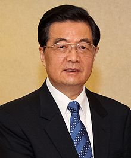

维基媒体基金会主持之讨论页咨询进入第二阶段，请踊跃参与讨论。 | [关闭] |
胡锦涛[编辑]
| 胡锦涛 | |||
|---|---|---|---|
|
 于2011年 | |||
| 中国共产党中央委员会总书记 | |||
|
任期 2002年11月15日－2012年11月15日 | |||
| 中央政治局常委 | |||
| 前任 | 江泽民 | ||
| 继任 | 习近平 | ||
|
任期 第十届全国人民代表大会 第十一届全国人民代表大会 | |||
|
任期 2003年3月15日－2013年3月14日 | |||
| 副主席 |
曾庆红（2003-2008） 习近平（2008-2013） | ||
| 前任 | 江泽民 | ||
| 继任 | 习近平 | ||
| 中国共产党中央军事委员会主席 | |||
|
任期 2004年9月19日－2012年11月15日 | |||
| 副主席 |
习近平（2010-2012） 郭伯雄（2004-2012） 徐才厚（2004-2012） | ||
| 前任 | 江泽民 | ||
| 继任 | 习近平 | ||
|
任期 2005年3月13日－2013年3月14日 | |||
| 副主席 |
习近平（2010-2013） 郭伯雄（2005-2013） 徐才厚 （2005-2013） | ||
| 前任 | 江泽民 | ||
| 继任 | 习近平 | ||
| 中国共产党中央政治局常务委员会委员[注 2] （排名第七 → 第五 → 第一 → 第一） | |||
|
任期 1992年10月19日－2012年11月15日 | |||
| 总书记 | 江泽民（十四、十五届中央委员会） → 自己（十六、十七届中央委员会） | ||
| 中国共产党中央书记处书记 （分管常务工作） | |||
|
任期 1992年10月19日－2002年11月15日 | |||
| 总书记 | 江泽民 | ||
| 前任 | 乔石 | ||
| 继任 | 曾庆红 | ||
|
任期 第九届全国人民代表大会 | |||
|
任期 1998年3月15日－2003年3月15日 | |||
| 主席 | 江泽民 | ||
| 前任 | 荣毅仁 | ||
| 继任 | 曾庆红 | ||
| 中国共产主义青年团中央书记处第一书记 | |||
|
任期 1984年12月－1985年11月 | |||
| 前任 | 王兆国 | ||
| 继任 | 宋德福 | ||
| 个人资料 | |||
| 出生 |
1942年12月21日[1][2] 中国江苏省泰县 | ||
| 籍贯 | 安徽省绩溪县 | ||
| 国籍 |
| ||
| 政党 | 中国共产党 | ||
| 配偶 | 刘永清（1970年结婚） | ||
| 儿女 | 胡海峰（子）、胡海清（女） | ||
| 母校 | 江苏省泰州中学、清华大学 | ||
| 职业 | 政治家 | ||
| 专业 | 水利工程 | ||
| 著作 | 《胡锦涛文选》 | ||
| 网站 | 胡锦涛简历 | ||
| 汉语名称 | |||
| 简化字 | 胡锦涛 | ||
| 繁体字 | 胡錦濤 | ||
| 汉语拼音 | Hú Jǐntāo | ||
|
| |||
| 汉语名称 | |||
| 简化字 | 胡锦涛 | ||
| 繁体字 | 胡錦濤 | ||
| |||
胡锦涛（1942年12月21日－）[3][2] ，男，汉族，中国共产党党员，中华人民共和国政治家、水利工程师。祖籍安徽绩溪龙川村，1942年12月出生于江苏省泰县（今属泰州市）[4]，1964年4月加入中国共产党，1965年7月参加工作，毕业于清华大学水利工程系河川枢纽电站专业。曾任中国共产党和中华人民共和国的主要领导职务及最高领导人，2002年11月至2012年11月间担任第十六、十七届中国共产党中央委员会总书记。此外，胡锦涛在1992年11月至2012年11月间担任第十四至十七届中共中央政治局常委[注 3]，也是第十四和十五届中共中央书记处排名第一的书记（1992年10月－2002年11月）。国家职务上，于1998年3月至2013年3月间先后担任中华人民共和国副主席（1998-2003）、主席（2003-2013）职务。军队方面于1999至2013年间先后担任中共中央军委及国家军委副主席、主席。中共官方将胡锦涛在任期间的中央领导集体称为“以胡锦涛同志为总书记的党中央”[5]，及党和国家第四代领导集体。
夫人刘永清，育有一子一女。自身有胞妹两人。
目录
家族背景[编辑]
胡锦涛祖上曾出过明朝户部尚书胡富、兵部尚书胡宗宪等历史名人，属龙川胡氏一系[注 4]。胡锦涛的高祖父胡允源[7]来到江苏泰州后，开了一个小店。到胡锦涛曾祖父胡树铭时已小有规模，又在上海、浙江等地开设了7个分店，并从事茶叶出口生意，生意兴隆时曾聘用多名英语翻译[8]。
生平[编辑]
早年[编辑]
民国31年（1942年），胡锦涛出生于江苏省泰县[4][9]。7岁时，胡锦涛母李文瑞去世，其为胡家独子，其下有妹妹胡锦蓉与胡锦莱[10]。
1949年，中华人民共和国成立后，胡静之的茶庄随公私合营被划归当地供销社[11]。
他最初就读于五巷小学，后转入泰州大埔小学，1953年进入私立泰州中学（现泰州二中），1956年进入江苏省泰州中学借读。根据其家族人回忆，胡锦涛小时很文静、喜爱读书、性格随和。他曾在履历表籍贯栏中填过“泰州”，受到父亲训导后从中学开始就一直填“安徽绩溪”[11]。胡锦涛在绩溪家乡的堂姐胡锦霞表示：胡锦涛看到她的籍贯填的也是“安徽绩溪”，父亲胡增钰对他说：“我们老家是安徽绩溪，你长在江苏，祖籍是安徽。”此后，胡锦涛在一次全国团代会上，他对来自安徽的代表说：“我也是安徽人，我的老家在徽州地区，我是绩溪人”[12][13]。
大学时期[编辑]
从1959年9月起，胡锦涛在清华大学开启了大学生涯，期间，他结识了之后的夫人刘永清[12]，他和夫人刘永清当时是水利工程系同年级学生中年龄最小的两位。在校期间，胡锦涛是出名的高材生，大学6年，除一门功课4分外，其余全是满分5分[14]。
胡锦涛在清华大学期间曾任学生文工团舞蹈队团支部书记[15]、水利系政治辅导员。1964年4月加入中国共产党。同年，为庆祝中华人民共和国成立15周年，胡锦涛作为清华大学选派的100名学生参加了大型音乐舞蹈史诗《东方红》。在10月1日当天，胡锦涛又被选入清华大学游行队伍，参加了国庆大游行。之后，胡锦涛把参加《东方红》排练和游行的感受写成一篇文章，题为《上了生动的一课 毛泽东思想的颂歌——工人农民战士学生座谈音乐舞蹈史诗〈东方红〉》，发表在1964年10月6日的《人民日报》上。[14]
1965年大学毕业后，胡锦涛被学校留在水利系参加科研工作、任教，并继续担任政治辅导员。文革时期参与和倾向的是相对清华大学井冈山派更温和保守的造反派──“四‧一四派”[16]。
步入政坛[编辑]
1968年至1969年，胡锦涛在位于甘肃的水电部刘家峡工程局房建队参加了工作。1969年至1974年，在水利部第四工程局八一三分局历任技术员、秘书、机关党支部副书记[12]。1974年调任甘肃建设委员会秘书，因受到时任中共甘肃省委书记宋平的赏识而进入政坛[17]:81，此后历任甘肃省建委设计管理处副处长、甘肃省建委副主任。1982年9月，胡锦涛调任共青团甘肃省委书记。数月后担任共青团中央书记处书记、全国青联主席。曾于1985年率青年团访问日本，受到礼敬。1984年至1985年11月任共青团中央书记处第一书记。
主政地方[编辑]
贵州改革[编辑]
当时中共一度考虑由胡锦涛出任中共中央宣传部部长，但考虑到当时中央的团派成员不少，即将朱厚泽与胡锦涛互调位置[17]:93。1985年，胡锦涛调任中共贵州省委书记。当时的贵州是中国最贫困的省份，1986年的贵州人均生产总值是461元人民币，在中国省级行政区中排名倒数第一[17]:93。胡锦涛上任后，对贵州省开始大规模的机构改革，先后撤消了省人事局、劳动局、统计局、审计局、工商局、物价局等11个部门的党组，政府系统逐步建立行政首长负责制[12]。
1988年10月14日，贵州大学发生进修学员殴打致伤本校学生事件。后来又发生贵州大学数千名学生上街游行示威，胡锦涛连夜召开会议，与示威大学生进行商讨并进行协调，最终化解这一事件[17]:88。
西藏维稳[编辑]
时任中共西藏自治区党委书记的伍精华因为劳累过重，在1988年6月、11月连续病倒[17]:94。随后，中共中央调遣当时最年轻的（四十七岁）省委书记胡锦涛，担任中共西藏自治区党委书记[17]:95。
而在胡锦涛上任不久之后，第十世班禅额尔德尼在1989年1月28日因为突发心肌梗死于日喀则病逝，享年51岁，西藏时局顿时异常复杂[17]:96。在面对复杂的政治环境和极端事件的处理上，他的作为受到邓小平等人的赞许，也为此后的政治生涯，奠定了丰富的经验基础[18]。
政治局常委[编辑]
1992年，50岁的胡锦涛进入中共中央负责组织工作。同年10月经中央政治局常委宋平推荐及邓力群提名，在中共十四大上当选中共中央政治局常委、中共中央书记处书记（负责常务工作），晋升正国级党和国家领导人，正式成为第三代领导集体的重要成员。1993年2月，接替乔石，任中共中央党校校长。
1998年3月15日，胡锦涛当选中华人民共和国副主席，1999年再任中国共产党中央军事委员会副主席和中华人民共和国中央军事委员会副主席[19]。1998年，胡锦涛兼任中央关于军队武警部队政法机关不再从事经商活动工作领导小组组长。2001年911事件发生后，中国成立国家反恐怖工作协调小组，胡锦涛兼任组长[20]。
第四代领导人[编辑]
2002年11月，胡锦涛在中共十六届一中全会上当选为第十六届中国共产党中央委员会总书记，成为中共中央主要负责人。2003年3月，在第十届全国人民代表大会第一次会议上当选第六届中华人民共和国主席，2004年和2005年在中共十六届四中全会和第十届全国人大第三次会议上分别当选中共中央军委主席和国家军委主席。2007年10月在中共十七届一中全会上连任中央委员会总书记和中央军事委员会主席，2008年3月在第十一届全国人民代表大会上连任国家主席及国家军委主席。
胡锦涛在上任后的首次中共中央政治局常委会议强调“宪法的不可侵犯性”。中国政府也首次发布了关于中国社会动荡的数据，并赞同人民有知情权。在2003年非典疫情中胡锦涛政府行动果断，及时免去了卫生部部长张文康和北京市市长孟学农的官职。以平民领导人的姿态受到了人们的称赞。在经济方面，取消了农民农业税，对民工采取更宽松的政策，率先扶持内陆城市，实施基本医保制度，增加城市地区的最低工资金额，建设经济适用房项目。[21]
经济政策[编辑]
胡锦涛注重社会经济的平衡和中国内陆地区资源的合理配置[21]。在其任内，中国经济整体呈现出“国进民退”的趋势。在民航、钢铁、汽车、房地产等领域，一些国有大型企业靠政府政策倾斜及直接注资，大规模吞并民营企业。08-09年间，政府为抵御金融危机推出了扩大内需十项措施，但巨额的投资大部分流向地方政府和国企，使得民营企业在危机中受到市场和国企的双重夹击。[22][23]
民族问题[编辑]
2009年9月29日，国务院第五次全国民族团结进步表彰大会在北京举行。胡锦涛以党和国家领导人的身份发表了针对民族问题的讲话。[24]
言论自由[编辑]
执政期间，工业和信息化部在2009年7月起，对全国新销售的个人电脑预装上网过滤软件绿坝·花季护航[25]，而后迫于民众压力，于同年8月取消大部分强制安装[26]。
两岸关系[编辑]
执政期间的2005年3月14日，全国人民代表大会投票通过了《反分裂国家法》，被大多数中华人民共和国民众认为是从法理上维护了国家统一和领土完整[27]。
人事变动[编辑]
在胡锦涛任总书记期间下，有两位中共中央政治局委员级别的官员被处理。2006年9月，原中共上海市委书记陈良宇被免去职务并接受调查[28]。2012年3月，原中共重庆市委书记薄熙来被免去职务并接受调查[29]。
外交政策[编辑]
胡锦涛推行睦邻友好政策，主张全方位外交，重视对东南亚的中国周边邻国改善关系[21]。
2012年，针对日本政府“购买”钓鱼岛，中国及时果断地采取了一系列反制措施；在南海问题上，中国适时妥善应对，同时积极推动与东盟国家开展海上对话与合作，切实地维护了地区稳定。胡锦涛表示：“在钓鱼岛问题上，中方立场是一贯的、明确的。日方采取任何方式‘购岛’都是非法的、无效的，中方坚决反对。中国政府在维护领土主权问题上立场坚定不移。日方必须充分认识事态的严重性，不要作出错误的决定，同中方一道，维护中日关系发展大局。”[30]
思想政治[编辑]
继毛泽东思想、邓小平理论、江泽民提出的三个代表之后，胡锦涛提出包括科学发展观、社会主义荣辱观、和谐社会等理论，其中科学发展观已在中共十七大上被写入中国共产党章程，在中共十八大上，科学发展观更被列为党的重要“指导思想”之一[31]。2018年3月“科学发展观”写入“中华人民共和国宪法”。
2008年1月15日，胡锦涛在中国共产党第十七届中央纪律检查委员会第二次全体会议上发表讲话，声称今后会把反腐败工作的成效看作是取信于民的重要指标，这是中国进入转型发展近30年来第一次明确提出来的关于反腐败目标的看法[32]。执政期间，社会问题越来越尖锐，收入差距也不断扩大[21]。
卸任职务[编辑]

根据中共确立的领导人最多连任两届的原则，胡锦涛在2012年11月召开的中国共产党第十八次全国代表大会选出新一届中央委员会后[33]，卸任中共中央总书记和中共中央军委主席的职务，由习近平接任。胡锦涛成为中华人民共和国成立后，首位一次交出所有权力的非终身制最高领导人[34]。在2013年3月召开的十二届全国人民代表大会第一次会议上，胡锦涛卸任中华人民共和国主席和国家中央军委主席的职务，正式退休。
荣誉[编辑]
- 2010年，美国福布斯杂志公布2010年全球最具权力人物排行榜，胡锦涛排名第一[36]。
评价[编辑]
正面[编辑]
- 2012年6月5日，人民日报海外版以《黄金10年强国路》为题，称过去的十年，是“黄金发展期，矛盾凸显期”。文章还将胡温执政的十年定调为“光荣绽放的十年”、“多难兴邦的十年”、“人字大写的十年”。[37][38]
- 习近平刚上任中共中央总书记时表示，以胡锦涛同志为总书记的党中央，团结带领全国各族人民，取得了举世瞩目的辉煌成就。为了党和人民事业的继往开来，胡锦涛同志，以及吴邦国、温家宝、贾庆林、李长春、贺国强、周永康等同志，带头退出党中央领导岗位，体现了崇高品德和高风亮节。[39]
负面[编辑]
- 美国杂志《大观》认为总书记胡锦涛为首的中国共产党领导层控制舆论与强行镇压被中共官方所认定的邪教组织[43]，在其2005年的十大独裁者排名栏目中，将胡列第四名，2006年降至第六，其后数年均名列十名内[44]。
- 无国界记者指责胡锦涛以“和谐社会”为借口阻止中国出现自由媒体，把胡锦涛列入“新闻自由掠夺者”名单[45]。2012年，“无国界记者”报道，中共中央总书记胡锦涛下令囚禁68名网民和30名记者，是囚禁新闻自由捍卫者最多的领导人之一[46]。
其他[编辑]
家族[编辑]
影视形象[编辑]
电视剧《历史转折中的邓小平》第44集第36分钟时，出现一个未标明姓名的新任中国共产党中央委员会候补委员，根据他戴黑框眼镜、面型、发型等特征判断，相信是前中共中央总书记胡锦涛[49]。有网民在微博说：“没提名字的年轻候补委员，几位元老都和他握手。演员有点胖了，不过这个造型倒是很容易让人想到是他。”[50]
著作[编辑]
注释[编辑]
参考文献[编辑]
引用[编辑]
- ^ [历史上的今天]国家主席胡锦涛出生. 新华网. [2018-12-16]. （原始内容存档于2018-01-30）.
- ^ 跳转至： 2.0 2.1 张善炬：跟着锦涛书记跑乡下. Mingjingnews.com. 2017-05-19 [2017-05-23]. （原始内容存档于2017-02-16）.
- ^ 《张善炬：跟着锦涛书记跑乡下》“接着他（胡锦涛）也兴致勃勃地给我讲了他的家乡，他（胡锦涛）的经历，乃至他的家庭、孩子，还提到他的生日是圣诞节。”. [2017-12-23]. （原始内容存档于2017-12-23）.
- ^ 跳转至： 4.0 4.1 胡锦涛简历. 新华网. [2010-12-04]. （原始内容存档于2016-03-04） （zh-vn.）.
- ^ 共产党员要做时代先锋为党旗添彩. News.xinhuanet.com. [2017-05-23].
- ^ 潘小平. 绩溪：溪水萦流 人文深厚. 《人物》杂志. 2005年, (第5期) [2010-12-05] （中文（简体））.[永久失效链接]
- ^ 北京派人取走了胡锦涛的所有档案 页面存档备份，存于互联网档案馆.博讯.
- ^ 近日胡锦涛再回北川 私人行程婉拒报道. 中国评论通讯社. [2015-10-01]. （原始内容存档于2015-10-02） （中文（繁体））.
- ^ 中华人民共和国主席胡锦涛. 中国国际广播电台. 2004-04-24 [2010-12-04]. （原始内容存档于2010-12-11） （中文（简体））.
- ^ 揭秘：胡锦涛34年不踏足出生地泰兴之谜. [2016-02-10]. （原始内容存档于2016-02-15） （中文（简体））.
- ^ 跳转至： 11.0 11.1 南方周末：乡邻、亲友和同学、老师眼中的胡锦涛. 中国网（转自《南方周末》）. 2002年11月16日 [2010年12月5日]. （原始内容存档于2010-05-06） （中文（简体））.
- ^ 跳转至： 12.0 12.1 12.2 12.3 读书清华 收获政治：胡锦涛的成长之路. 凤凰网（转自《中国新闻周刊》）. 2006年10月24日 [2010年12月5日]. （原始内容存档于2009-06-10） （中文（简体））.
- ^ 揭秘前国家主席胡锦涛家世:解放初期很清贫. 中华网. 2014年1月21日 [2014年1月21日]. （原始内容存档于2014年1月30日） （中文（简体））.
- ^ 跳转至： 14.0 14.1 领导人的清华故事：胡锦涛吴邦国常回校看看. 新浪网 新闻中心. 2011-04-12 [2010-12-04]. （原始内容存档于2011-04-15） （中文（简体））.
- ^ Willy Wo-Lap Lam (2006)，第4页
- ^ 宋永毅：文革派别、思潮和中南海领导人 互联网档案馆的存档，存档日期2012-03-30.
- ^ 跳转至： 17.0 17.1 17.2 17.3 17.4 17.5 17.6 李国强等. 《中国当代名人录 第9集》. 香港: 广角镜出版社有限公司. 1989年2月. ISBN 962226266X （中文（繁体））.
- ^ 事实证明 邓小平对胡锦涛的选择极其英明. 亚洲时报. 2006-09-29 [2010-12-05]. （原始内容存档于2008-12-05） （中文（简体））.
- ^ 中华人民共和国副主席中央军委副主席胡锦涛简介. news.sina.com.cn. [2017-10-17]. （原始内容存档于2017-10-17）.
- ^ 北青报微信公号：担任总书记之前胡锦涛还兼任鲜为人知的职务. 澎湃新闻. 2016-09-25 [2017-05-23]. （原始内容存档于2017-07-25） （中文）.
- ^ 跳转至： 21.0 21.1 21.2 21.3 Cheng Li, Eve Cary. The Last Year of Hu’s Leadership: Hu’s to Blame?. Jamestown Foundation. 2011-12-20 [2011-12-27]. （原始内容存档于2014-03-19）.
- ^ 国进民退：激荡2009 Archive.is的存档，存档日期2013-04-26，南方周末，2009年12月23日
- ^ 童大焕：国进民退的速度可能超乎想象 页面存档备份，存于互联网档案馆，凤凰网，2009年12月30日
- ^ 11、国务院第五次全国民族团结进步表彰大会举行 - 中国民族报电子版. Mzb.com.cn. 2009-12-22 [2017-05-23]. （原始内容存档于2016-03-04）.
- ^ 7月1日起新售个人电脑将预装上网过滤软件 页面存档备份，存于互联网档案馆，凤凰网，2009年06月09日
- ^ 李毅中谈“绿坝”：问题扩大政治化是不符事实. 中国新闻网. 2009-08-13 [2009-08-13]. （原始内容存档于2009-08-15） （中文（简体））.
- ^ 中国通过《反分裂国家法》 页面存档备份，存于互联网档案馆，人民网
- ^ JOSEPH KAHN. China’s Corruption Inquiry Targets Beijing. 纽约时报. 2006-10-27 [2012-05-13]. （原始内容存档于2013-09-25） （英语）.
- ^ 存档副本. [2013-03-25]. （原始内容存档于2013-09-26）.
- ^ 盘点2012年中国外交好声音. News.xinhuanet.com. [2017-05-23]. （原始内容存档于2013-02-07）.
- ^ 科学发展观，必须长期坚持的指导思想. News.xinhuanet.com. [2017-05-23]. （原始内容存档于2012-11-11）.
- ^ 任建明：总书记强调把反腐工作成效看作取信于民的重要指标 页面存档备份，存于互联网档案馆，中国共产党新闻网，2008年1月16日
- ^ 无线新闻 - 中共十八大 - 第十八次全国代表大会十一月八日召开. News.tvb.com. [2017-05-23]. （原始内容存档于2017-02-16）.
- ^ 1965. 习近平：胡锦涛等体现了崇高品德和高风亮节. Politics.people.com.cn. 2012-11-16 [2017-05-23]. （原始内容存档于2016-03-04）.
- ^ Stern 互联网档案馆的存档，存档日期2008-11-06. 2009年4月10日查阅
- ^ Template:Meta.author. Gallery: The World's Most Powerful People. Forbes.com. [2017-05-23]. （原始内容存档于2011-10-29）.
- ^ 十八大前瞻：官媒定调胡温执政期为黄金十年. News.takungpao.com.hk. [2017-05-23].[永久失效链接]
- ^ 黄金十年强国路（科学发展 成就辉煌）[失效链接]
- ^ 习近平：向胡锦涛同志表示衷心感谢和崇高敬意[永久失效链接]
- ^ 布什新书评各国领导人:胡锦涛实干普京冷血(图)[失效链接]
- ^ 干了十年国家主席就回家不见 柯P：胡锦涛了不起. Appledaily.com.tw. [2017-05-23]. （原始内容存档于2017-07-21）.
- ^ 自由评论网 > 投书 《中国作家谈》柯文哲应当补上的中国课 2014-12-08 06:00 goShare();. 《中国作家谈》柯文哲应当补上的中国课. Talk.ltn.com.tw. 2014-12-08 [2017-05-23]. （原始内容存档于2017-08-02）.
- ^ 独裁者排行榜 互联网档案馆的存档，存档日期2009-10-15.
- ^ 美杂志列十大独裁者胡锦涛排第六. Voachinese.com. 2006-01-22 [2017-05-23]. （原始内容存档于2016-03-06） （中文）.
- ^ 胡锦涛再上新闻自由“掠夺者”名单 页面存档备份，存于互联网档案馆 BBC 2010年5月3日
- ^ 人权组织批胡锦涛践踏新闻自由. Bbc.co.uk. 1970-01-01 [2017-05-23]. （原始内容存档于2012-05-06）.
- ^ 克里·布朗. 胡锦涛的抉择. 纽约时报中文网. 2012年11月12日 [2012-11-12]. （原始内容存档于2012年11月14日）.
- ^ 刘永清：做事低调的第一夫人. 联合晚报. 2009年9月19日. （原始内容存档于2011年12月14日） （中文（简体））.
- ^ 胡锦涛未缺席 “邓小平”再现敏感人物. 多维新闻. 2014-09-18 [2014-09-18]. （原始内容存档于2014-09-20）.
- ^ 港媒：胡锦涛亮相电视剧《历史转折中的邓小平》. 大公网. 2014-09-18 [2014-09-18]. （原始内容存档于2014-10-18）.
- ^ 《胡锦涛文选》在全国出版发行. 新华社. 2016-09-19 [2016-10-02]. （原始内容存档于2016-10-03）.
来源[编辑]
- 书籍
- Willy Wo-Lap Lam. Chinese politics in the Hu Jintao era: new leaders, new challenges. M.E. Sharpe. 2008. ISBN 9780765617736 （英语）.
- Daniel K. Davis. Hu Jintao. Infobase Publishing. 2007. ISBN 9780791095188 （英语）.
- Tun-jen Cheng, Jacques Delisle, Deborah Brown. China under Hu Jintao: opportunities, dangers, and dilemmas. World Scientific. 2006. ISBN 9789812563477 （英语）.
外部链接[编辑]
| 维基共享资源中相关的多媒体资源：胡锦涛 |
| 维基语录上的相关摘录： 胡锦涛 |
- 中国共产党新闻网胡锦涛简介（多国语言）
- 中国领导干部资料库-胡锦涛
- 新华网－领导人活动报道集－胡锦涛
- 新意文化网—胡锦涛专刊
- BBC News:China's leader shows his stripes（英文）
- 胡主席指挥我们向前进（军旅歌曲）
参见[编辑]
| 中国共产党职务 | ||
|---|---|---|
| 前任： 江泽民 |
中国共产党中央委员会总书记 2002年11月—2012年11月 |
继任： 习近平 |
| 中国共产党中央军事委员会主席 2004年9月—2012年11月 | ||
| 前任： 张万年、迟浩田 |
中国共产党中央军事委员会副主席 （与张万年、迟浩田、郭伯雄、曹刚川同时在任） 1999年9月—2004年9月 |
继任： 郭伯雄、徐才厚 |
| 前任： 乔石 |
中国共产党中央书记处书记 （负责常务工作） 1992年10月—2002年11月 |
继任： 曾庆红 |
| 中共中央党校校长 1993年2月—2002年12月 | ||
| 前任： 伍精华 |
中国共产党西藏自治区委员会书记 1988年12月—1992年10月 |
继任： 陈奎元 |
| 前任： 朱厚泽 |
中国共产党贵州省委员会书记 1985年7月—1988年12月 |
继任： 刘正威 |
| 前任： 江泽民 |
中华人民共和国主席 2003年3月—2013年3月 |
继任： 习近平 |
| 中华人民共和国中央军事委员会主席 2005年3月—2013年3月 | ||
| 前任： 荣毅仁 |
中华人民共和国副主席 1998年3月—2003年3月 |
继任： 曾庆红 |
| 前任： 张万年、迟浩田 |
中华人民共和国中央军事委员会副主席 （与张万年、迟浩田同时在任） 1999年10月—2003年3月 |
继任： 曹刚川、郭伯雄 |
| 无 | 中共第16至17届中央政治局常务委员会委员 （位列第1） |
继任： 吴邦国 （位列第2） |
| 前任： 李瑞环 （位列第四） |
中共第15届中央政治局常务委员会委员 （位列第5） |
继任： 尉健行 （位列第6） |
| 前任： 刘华清 （位列第6） |
中共第14届中央政治局常务委员会委员 （位列第7） |
继任： 荣毅仁 国家副主席 |
| 非营利组织职务 | ||
| 前任： 王兆国 |
中国共产主义青年团中央书记处第一书记 1984年12月—1985年11月 |
继任： 宋德福 |
| 前任： 胡启立 |
中华全国青年联合会主席 1983年8月—1985年4月 |
继任： 刘延东 |
| ||
| |||
| ||
| ||


{kind=link}
{kind=link}
{kind=link}
{kind=link}
{kind=link}
{kind=link}
{kind=link}
{kind=link}
{kind=link}
{kind=link}
| ||
| ||
.svg){kind=link}
{kind=link}
{kind=link}
| ||
| ||
| ||
|
- 1942年出生
- 在世人物
- 中共中央主要负责人
- 中华人民共和国党和国家领导人
- 2013年卸任党和国家领导人
- 中共中央政治局常委
- 中共中央政治局委员
- 中国共产党第十七届中央政治局常务委员会委员
- 中国共产党第十七届中央政治局委员
- 中国共产党第十六届中央政治局常务委员会委员
- 中国共产党第十六届中央政治局委员
- 中华人民共和国时期中国共产党领导人
- 中国共产党第十五届中央政治局常务委员会委员
- 中国共产党第十五届中央政治局委员
- 中国共产党第十四届中央政治局常务委员会委员
- 中国共产党第十四届中央政治局委员
- 西藏自治区正职领导人
- 中华人民共和国贵州省正职领导人
- 中国共产主义青年团第一书记
- 中国共产主义青年团中央书记处书记
- 胡锦涛
- 胡锦涛家族
- 胡姓
- 姜堰人
- 绩溪人
- 清华大学校友
- 中华人民共和国工程师
- 中国共产党中央委员会总书记
- 中华人民共和国主席
- 中华人民共和国副主席
- 中共中央党校校长
- 中国共产党中央军事委员会主席
- 中国共产党中央军事委员会副主席
- 中华人民共和国中央军事委员会主席
- 中华人民共和国中央军事委员会副主席
- 中共西藏自治区党委书记
- 中共贵州省委书记
- 中国共产主义青年团甘肃省委员会书记
- 第六届全国政协常务委员
- 第七届全国人大代表
- 第八届全国人大代表
- 第九届全国人大代表
- 第十届全国人大代表
- 第十一届全国人大代表
- 江苏省全国人民代表大会代表
- 西藏自治区全国人民代表大会代表
- 贵州省全国人民代表大会代表
- 时代百大人物
- 中国红十字会名誉会长
- 中国共产党第十二届中央委员会委员
- 中国共产党第十三届中央委员会委员
- 中国共产党第十四届中央书记处书记
- 中国共产党第十五届中央书记处书记
- 全国青联主席